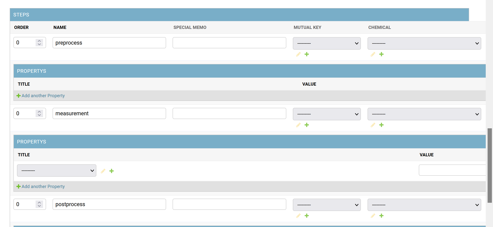
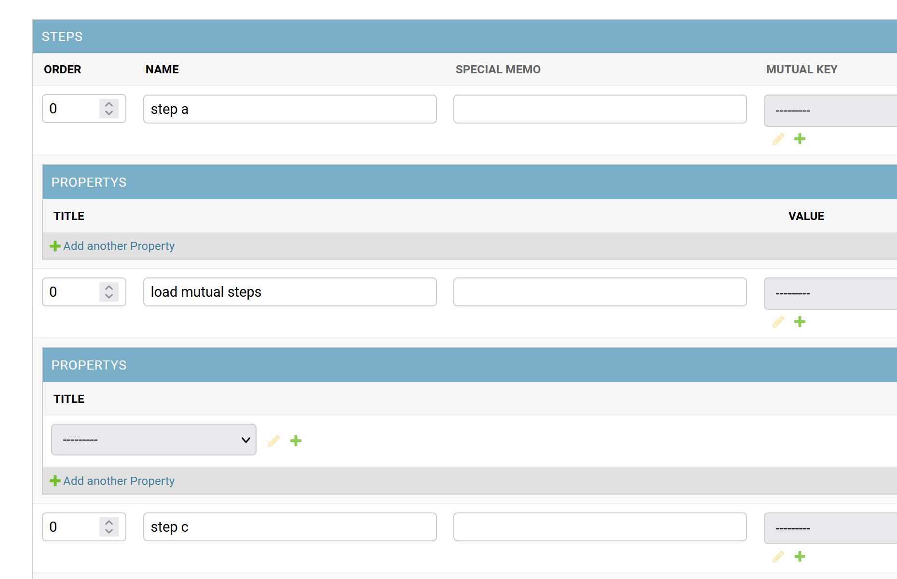
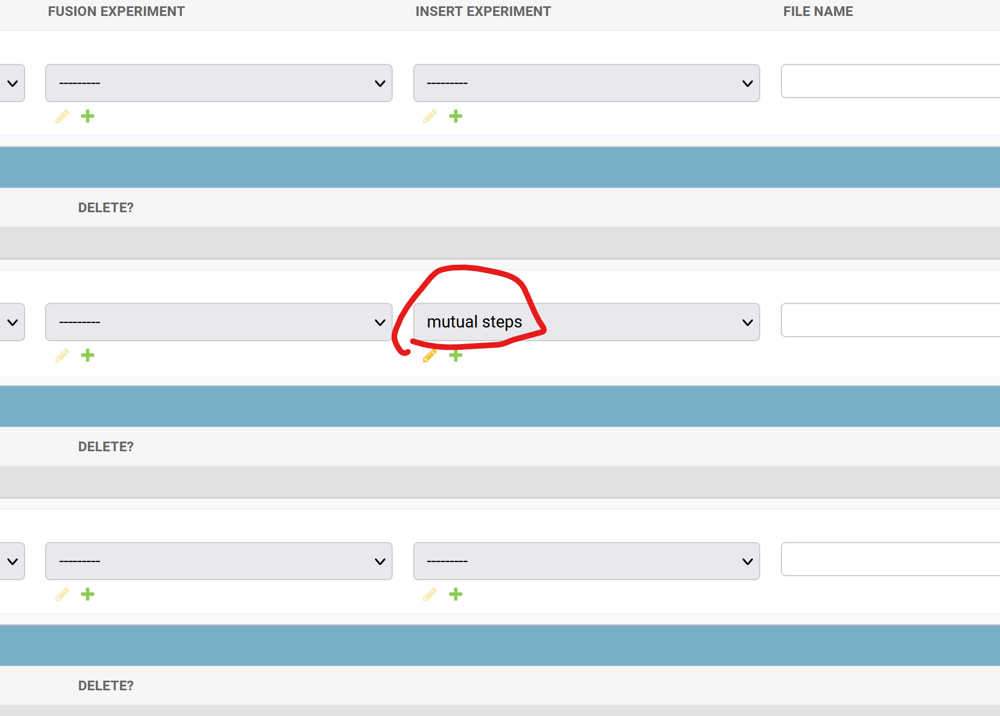
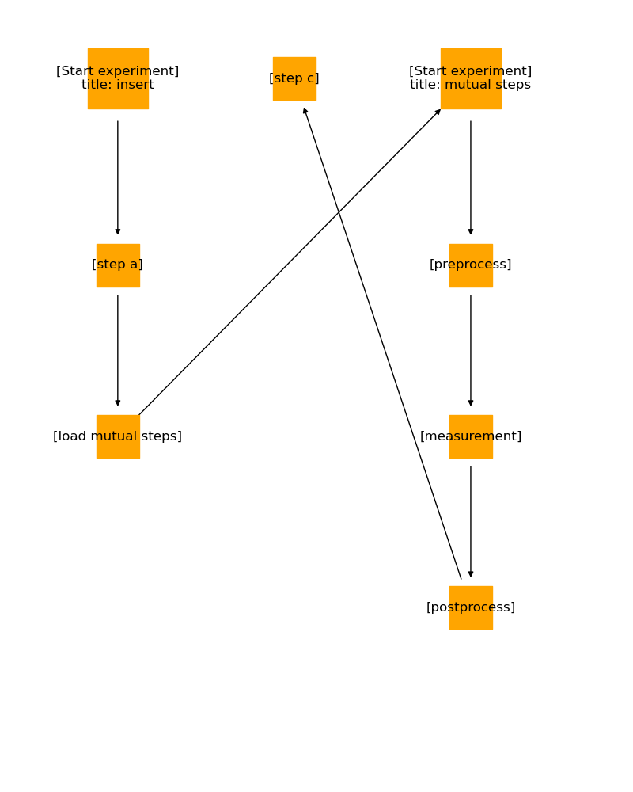
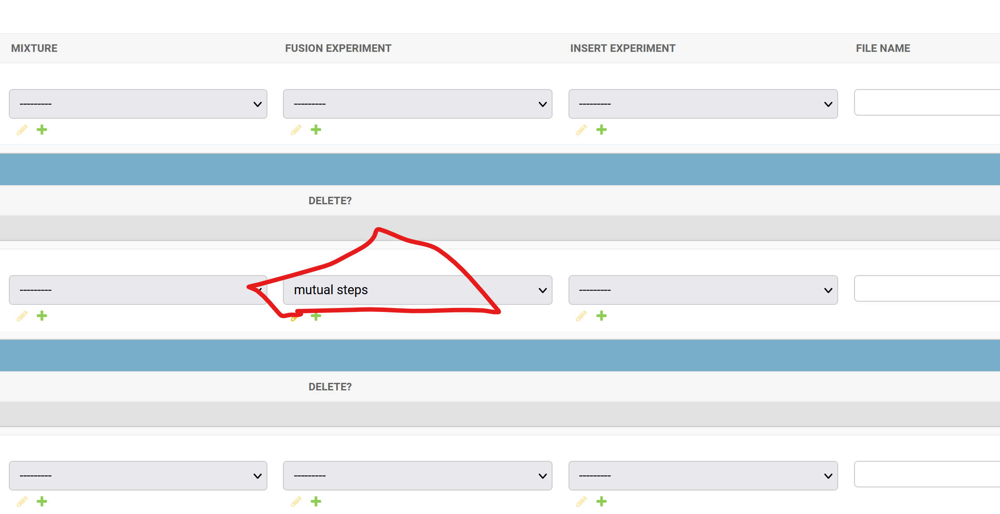
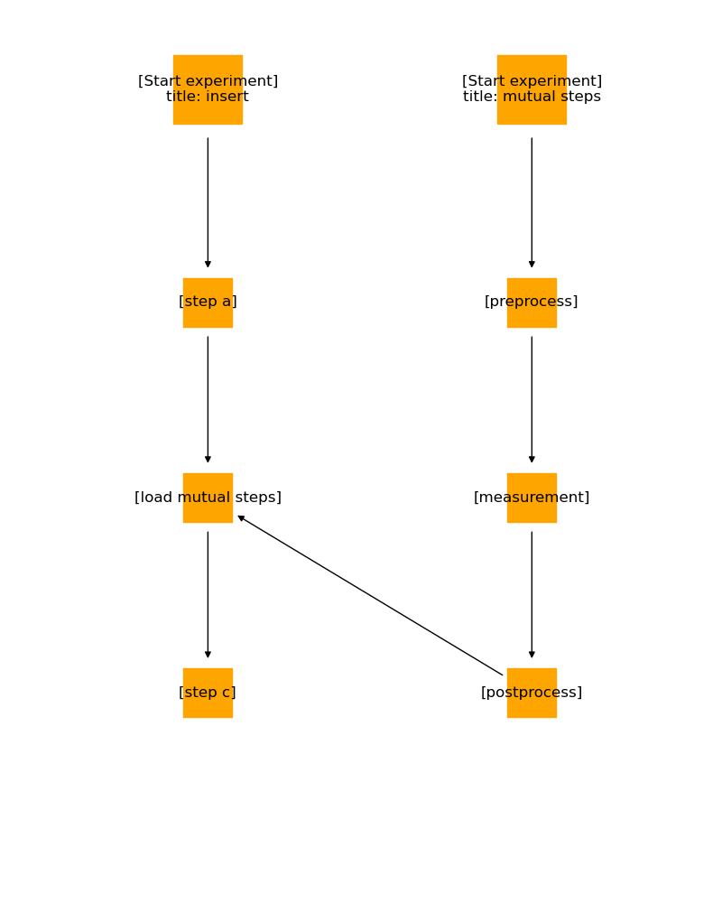
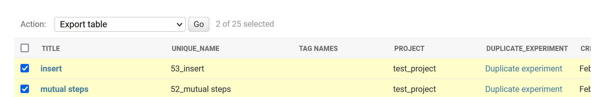

7. Advanced options of experiments¶
7.1. Insersion¶
7.1.2. How to do this¶
7.1.2.1. Prepare mutual steps¶
Generate a new graph for the mutual process

Generate a new graph for insersion

Select “mutual steps” to be inserted in the “INSERT EXPERIMENT form
It locates on the very right side of the page

After saving, view the graph to check the insersion

7.2. Integration¶
7.2.2. How to do this¶
Select the target experiment in the “FUSION EXPERIMENT” form

You can view the integrated graph

7.3. Important note during exporting¶
You must select all experiments, including son-experiments for inserion and integrtion, during the exporting process
Otherwise, correct export cannot be done
